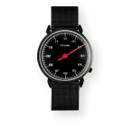
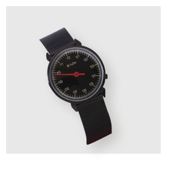
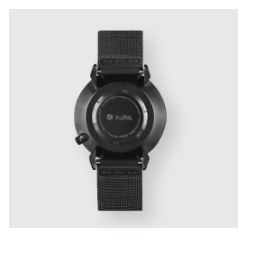
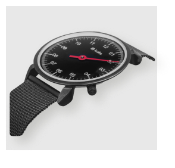

Головна
<
Каталог
<
Чоловічі годинники
<
Georg Jensen




KULTE, 26 ММ
12 700
Опис
Технічні характеристики
Наручні годинники KULTE, розроблені датським дизайнером Хеннінгом Коппелія, були випущені в 1982 році. Вони були зустрінуті оплесками, а дизайн вважався революційним.
Загальна естетика мінімалістична, а гострі, плавні лінії корпусу стали легендарними. Механізм Swiss Made забезпечує високий рівень технічних характеристик.
Наручний годинник KULTE - це зразок датської дизайнерської спадщини, історія балансу та точності як всередині, так і зовні.
В КОРЗИНУ
Ремінці
Дивитись всі
TECHNE
15 700
TECHNE
15 700
TECHNE
22 700